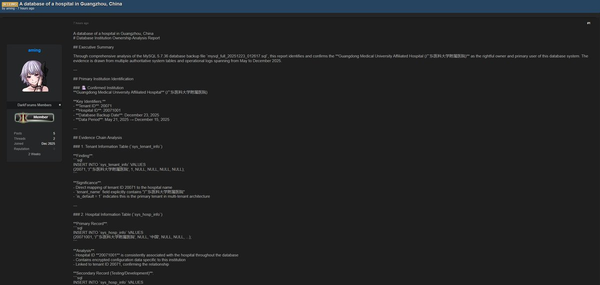

拱北靠北
@psyofsouthwest
RT @mirrorzk: 名为 "aming" 的暗网用户声称正在出售一份来自广东医科大学附属医院的 MySQL 数据库备份.
数据库文件名 mysql_full_20251223_012617.sql
大小 1.4GB
MySQL…

Mirror Tang
@mirrorzk
名为 "aming" 的暗网用户声称正在出售一份来自广东医科大学附属医院的 MySQL 数据库备份.
数据库文件名 mysql_full_20251223_012617.sql
大小 1.4GB
MySQL 版本 5.7.36
创建方式 mysqldump 10.13
时间跨度 21/5/2025-21/12/2025
备份日期 https://t.co/8w5VYswokW